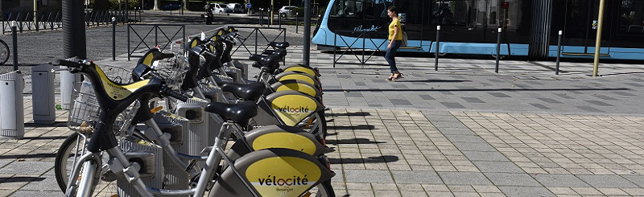
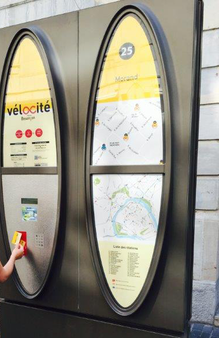

On propose durant les travaux pratiques de construire et tester un système de vélos en libre service, comme Vélocité à Besançon ou Vélib' dans différentes villes dont Paris.
Le principe du système que nous considérons est le suivant. Des vélos de différents types sont mis à disposition des usagers, dans des stations un peu partout en ville. Chacune des stations dispose d'un certain nombre de bornes auxquelles sont arrimés des vélos qui sont disponibles pour être empruntés.
Un abonné au service peut, à une station donnée, débloquer un vélo présent pour effectuer un trajet avec celui-ci. Le vélo emprunté sera ensuite reposé soit à la même station, soit à une autre station, en le ré-arrimant à une borne disponible.
La municipalité gère les inscriptions des abonnés et le bon fonctionnement des stations de vélo. Notamment, un service est en charge de faire la tournée des stations pour répartir les vélos de façon uniforme. Par exemple : dans une ville où existe un dénivelé important (comme à Besançon entre le centre-ville et l'extérieur de la Boucle), on sait que les stations en bas de pente sont souvent plus remplies que les stations en haut de colline, il faut donc régulièrement remonter les vélos pour ainsi rééquilibrer les vélos et les bornes libres disponibles. Similairement, il est également possible que les habitudes de déplacement des usagers entraîne une pénurie de vélos à certaines stations, à certaines heures de la journée, alors qu'à d'autres c'est le contraire. Typiquement, en début de matinée, les usagers vivant au centre-ville vont avoir tendance à prendre un vélo d'une station proche de leur domicile pour ensuite rejoindre leur lieu de travailà côté duquel ils déposeront leur vélo. Le soir, c'est le phénomène inverse qui se produit.
Les vélos peuvent être abimés soit par un des usagers, soit parce qu'ils ont été vandalisés alors qu'ils étaient arrimés sur la borne. Les vélos peuvent être réparés sur place, ou ramenés à l'atelier pour une réparation plus poussée si cela s'avère nécessaire.